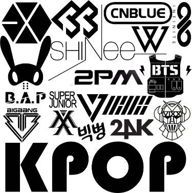
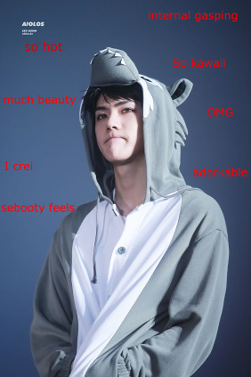

|
|
Blog | Design | About |
Interests  Kpop has been one of my main interests for a long while. What I really like about it is the style and the music. This love for kpop created a great liking for the Korean language because of which I learnt the Korean alphabet and also have knowledge of basic convewrsational Korean. 안녕하새요. 저는 니콜입니다. 만나서 반갑습니다. 잘 부탁드립니다. My bias band is B.A.P. and sometimes cheat and tend to like Exo more. My ultimate kpop bias is Oh Sehun. He's a sassy makne which I tend to be at times. I like him because check out he's skinny, he's blonde, he's rich and he is a little :). Now for something completely different. |